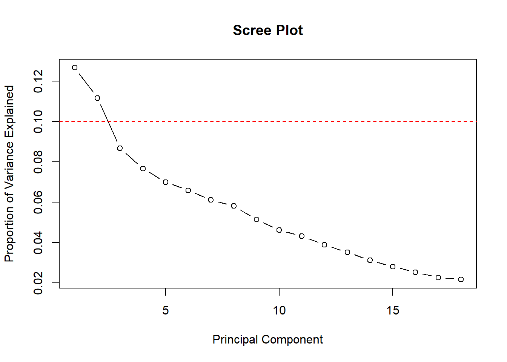

Primary Vignette - Classification Strategies
Objectives
Perform exploratory data analysis
Reduce dimensionality using principal component analysis
Employ logistic regression using
glm()andmultinom()
We’ll illustrate these strategies using the California Household Travel Survey (CHTS) dataset.
# Loading necessary packages
library(tidyverse)── Attaching core tidyverse packages ──────────────────────── tidyverse 2.0.0 ──
✔ dplyr 1.1.4 ✔ readr 2.1.5
✔ forcats 1.0.0 ✔ stringr 1.5.1
✔ ggplot2 3.5.1 ✔ tibble 3.2.1
✔ lubridate 1.9.3 ✔ tidyr 1.3.1
✔ purrr 1.0.2
── Conflicts ────────────────────────────────────────── tidyverse_conflicts() ──
✖ dplyr::filter() masks stats::filter()
✖ dplyr::lag() masks stats::lag()
ℹ Use the conflicted package (<http://conflicted.r-lib.org/>) to force all conflicts to become errorslibrary(ggplot2)
library(dplyr)
library(tidymodels)── Attaching packages ────────────────────────────────────── tidymodels 1.2.0 ──
✔ broom 1.0.7 ✔ rsample 1.2.1
✔ dials 1.3.0 ✔ tune 1.2.1
✔ infer 1.0.7 ✔ workflows 1.1.4
✔ modeldata 1.4.0 ✔ workflowsets 1.1.0
✔ parsnip 1.2.1 ✔ yardstick 1.3.1
✔ recipes 1.1.0
── Conflicts ───────────────────────────────────────── tidymodels_conflicts() ──
✖ scales::discard() masks purrr::discard()
✖ dplyr::filter() masks stats::filter()
✖ recipes::fixed() masks stringr::fixed()
✖ dplyr::lag() masks stats::lag()
✖ yardstick::spec() masks readr::spec()
✖ recipes::step() masks stats::step()
• Search for functions across packages at https://www.tidymodels.org/find/library(sparsesvd)
library(nnet)
#Read in datasets
PersonData <- read_rds('./Data/raw/PersonData_111A.Rds')
HHData <- read_rds('./Data/raw/HHData_111A.Rds')
hh_bgDensity <- read_rds('./Data/raw/hh_bgDensity.Rds')
#merge datasets
personHHData <- left_join(PersonData, HHData) %>%
left_join(hh_bgDensity)Joining with `by = join_by(hhid)`
Joining with `by = join_by(hhid)`# determine which columns are numeric
numeric_columns <- sapply(personHHData, is.numeric)
# select only numeric variables
numeric_data <- personHHData[, numeric_columns]
#remove county FIP code, household id, and bg_density (identification and response variables)
numeric_data <- numeric_data %>% select(-CTFIP, -hhid, -bg_density)
# standardize data
scaled_data <- scale(numeric_data)
# add back in household id column and bg_group
hhid <- personHHData$hhid
bg_group <- as.factor(personHHData$bg_group)
scaled_data <- cbind(hhid, bg_group, scaled_data)
# remove rows with NA values
scaled_data_clean <- na.omit(scaled_data) %>%
as.data.frame()#partition data
set.seed(14531)
partitions <- scaled_data_clean %>%
initial_split(prop = 0.8)
#separate id and response variable in testing and training data
test_dtm <- testing(partitions) %>%
select(-hhid, -bg_group)
test_labels <- testing(partitions) %>%
select(hhid, bg_group)
train_dtm <- training(partitions) %>%
select(-hhid, -bg_group)
train_labels <- training(partitions) %>%
select(hhid, bg_group)set.seed(14531)
#Convert training data to sparse matrix to use sparsesvd function to perform PCA
train_dtm_sparse <- as.matrix(train_dtm) %>%
as("sparseMatrix")
#Perform PCA on sparse training data matrix and turn into dataframe
train_svd <- sparsesvd(train_dtm_sparse, rank = 18)
training_projected <- as.data.frame(train_svd$u %*% diag(train_svd$d))
#assign column names
colnames(training_projected) <- paste0("PC", 1:ncol(training_projected))set.seed(14531)
#function to reproject new data onto training PCA
reproject_fn <- function(.dtm, train_projected) {
.dtm_sparse <- as(.dtm, "sparseMatrix")
test_projected <- as.matrix(.dtm_sparse %*% train_projected$v %*% diag(1 / train_projected$d))
colnames(test_projected) <- paste0("PC", 1:ncol(test_projected))
return(test_projected)
}
#project test data onto training PCA
test_projected <- reproject_fn(test_dtm, train_svd)#explained variance plot
singular_values <- train_svd$d
variance_explained <- (singular_values^2) / sum(singular_values^2)
plot(variance_explained, type = "b", xlab = "Principal Component",
ylab = "Proportion of Variance Explained", main = "Scree Plot")
abline(h = 0.1, col = "red", lty = 2)
#cumulative variance plot
cumulative_variance <- cumsum(variance_explained)
plot(cumulative_variance, type = "b", xlab = "Principal Component",
ylab = "Cumulative Variance Explained", main = "Cumulative Variance")
# set the threshold for the cumulative variance (80%)
threshold <- 0.8
reduced_pcs <- which(cumulative_variance >= threshold)[1]
# print the number of PCs to keep
cat("Number of PCs to retain:", reduced_pcs)Number of PCs to retain: 12# Plot PC1 vs PC2
plot(training_projected$PC1, training_projected$PC2, xlab = "PC1", ylab = "PC2",
main = "PCA - PC1 vs PC2", pch = 19, col = "blue")
# Add the categorical variable to the PC scores
plot_pca_train <- cbind(training_projected, train_labels) # Replace with actual variable
# Plot with ggplot2
library(ggplot2)
ggplot(plot_pca_train, aes(x = PC1, y = PC2, color = as.factor(bg_group))) +
geom_point() +
labs(title = "PCA: PC1 vs PC2 by bg_group",
x = "PC1", y = "PC2") +
theme_minimal()+
scale_color_manual(values = c('green', 'blue', 'red', 'yellow'))Logistic Regression
Get the reduced PCA data that you will feed into logistic regression model
training_projected_reduced <- training_projected[, 1:reduced_pcs]
test_projected_reduced <- test_projected[, 1:reduced_pcs]
reduced_training <- cbind(training_projected_reduced, bg_group = train_labels$bg_group)
reduced_testing <- cbind(as.data.frame(test_projected_reduced), bg_group = test_labels$bg_group)Fit logistic regression model with the PCA reduced training data
library(nnet)
log_regmodel <- multinom(bg_group ~ ., data = reduced_training)# weights: 56 (39 variable)
initial value 761.075604
iter 10 value 733.235701
iter 20 value 732.330490
iter 30 value 732.049187
iter 40 value 731.996319
final value 731.991808
convergedLet’s see how well our model was able to classify the different household densities
logreg_test_predictions <- predict(log_regmodel, newdata = reduced_testing)